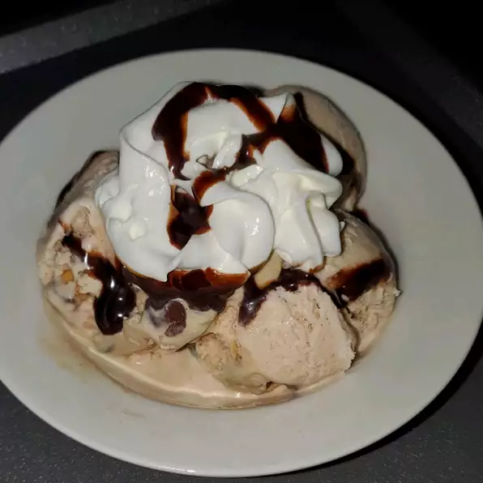

5-ingredient Ice Cream

Description:
It takes only 5 ingredients to make this fabulously creamy family pleaser! Before freezing, you can also add crushed sandwich cookies, nuts, chocolate chips, coconut or other favorites!
Ingredients:
- ½ cup cold milk
- 1 tablespoon vanilla extract
- 1 (14 ounce) can sweetened condensed milk
- ⅛ teaspoon salt
- 1 pint heavy cream
Instructions
- In a medium bowl, stir together cold milk, vanilla, condensed milk and salt. Set aside.
- In a large bowl, beat heavy cream with an electric mixer until stiff peaks form. Fold milk mixture into whipped cream.
- Pour into shallow 2 quart dish, cover and freeze for 4 hours, stirring once after 2 hours or when edges start to harden. Serve or store in an airtight container up to 10 days.